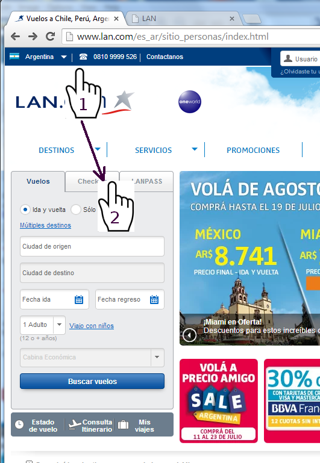
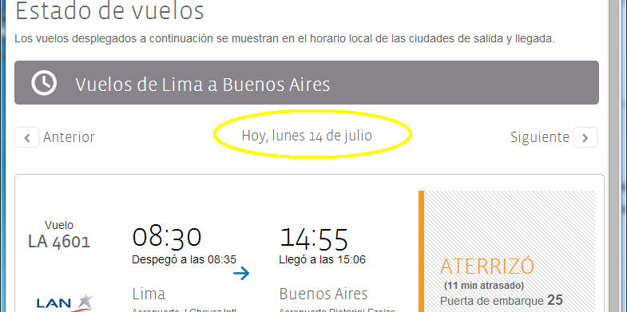
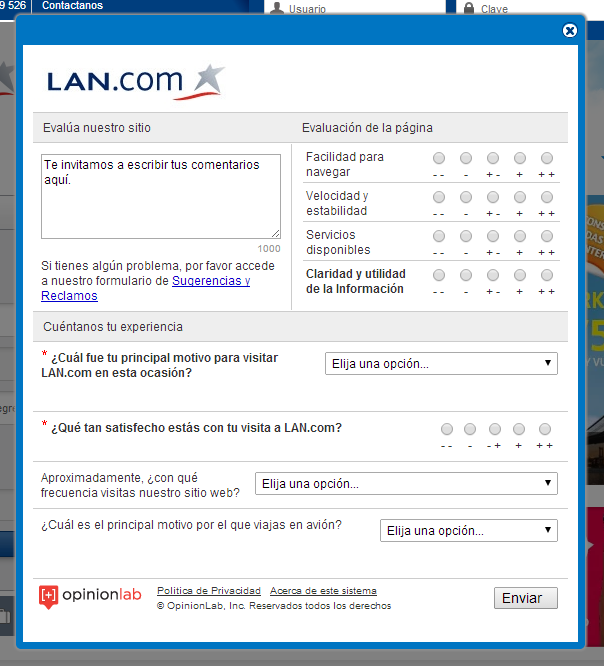

Al pasar el cursor por encima del menú horizontal, las opciones se despliegan muy rápido y se produce el efecto de cambio inesperado, que le produce al usuario la sensación de haber hecho algo mal.

Un usuario que está en la posición [1] y quiere picar en la [2] puede terminar seleccionando la "Guía de destinos LAN / Lonely Planet".
Al desplegarse el menú, las pestañas "Vuelos / Check-in / LANPASS" descienden y un link "Guía de destinos LAN / Lonely Planet" pasa a ocupar la posición donde el usuario quiere picar.
Sugerencia 1: No desplegar el menú cuando el usuario pasa el cursor por encima (hover), sino cuando lo pica. Así es como funciona en American Airlines, por ejemplo.
Sugerencia 2: Solo desplegar el menú cuando el usuario
estacionó el cursor encima por una fracción de segundo, por ejemplo usando la
técnica "hoverintent"
para demorar el evento hover unos milisegundos.
Así es como funciona en este mismo menú: al retirar el cursor el panel
desplegado demora un poquito antes de ocultarse.
En la versión ancha de "Estado de vuelos", una vez completados los datos de fecha, origen y destino, la fecha tiene el mismo valor visual que los links "Anterior" y "Siguiente".
"Anterior" y "Siguiente" son artefactos de navegación, mientras que la fecha es información viva y debería desplegarse con un estilo diferente.
Dónde: Inicio → Estado de vuelo → elegir fecha, origen y destino → [Ver estado del vuelo]

En cambio las horas de partida y llegada son mucho más visibles.
De hecho, la fecha tal como está resulta un poco "invisible" y un usuario podría no darse cuenta de que eligió una fecha incorrecta e ir al aeropuerto a la hora del vuelo del día anterior o el siguiente.
Sugerencia 1: Mostrar la fecha con la misma tipografía que las horas. Eso la haría más visible, y además expresaría mejor la relación que hay entre ambos datos, que en última instancia los dos son componentes de un horario.
Sugerencia 2: No está claro inicialmente si los links "Anterior" y "Siguiente" se refieren a páginas, fechas, o algo más. Serían más explícitos si en vez estuvieran rotulados "Domingo" y "Martes" (en el ejemplo).
Sugerencia 3: En la selección de fecha, origen y destino la fecha del día está resaltada. También se podría preseleccionar el aeropuerto de destino más cercano a la ubicación geográfica del usuario. En Buenos Aires, Ezeiza es la opción obvia. Pero para un extranjero podría ser una ayuda. Y, en todo caso, si el aeropuerto ofrecido tiende a ser el correcto las más de als veces, le ahorra un trabajito al usuario.
Sugerencia 4: Es posible que un usuario que está esperando la llegada de un viajero controle el estado de los vuelos varias veces. Cada vez debe elegir los aeropuertos de salida y llegada. Si se persistiera esta información entre sesiones (cookie) se le ahorraría al usuario el odio de tener que entrar los mismos datos una y otra vez.
Sugerencia 5: Al picar en los links "Anterior" o "Siguiente" no sucede nada durante unos segundos, por que la información demora antes de aparecer. El usuario debería tener algún feedback que le asegure que efectivamente se disparó el proceso, por ejemplo un throbber o un cambio visual en el link. En este caso particular el link debería deshabilitarse, por que picando reiteradamente sobre el mismo con intervalos de un segundo la página nunca cambia (cada vez comienza una nueva espera).
En formulario de evaluación tutea al usuario en los labels, pero lo trata de usted dentro de los inputs.
Dónde: Inicio → Pestaña "EVALÚE NUESTRO SITIO" que aparece por el margen derecho.

Por ejemplo la última pregunta "¿Cuál es el principal motivo por el que viajas en avión?" ofrece una lista de respuestas encabezada con "Elija una opción". El tratamiento es inconsistente.
Estos pequeños detalles transmiten una sensación de baja calidad que el usuario percibe subliminalmente, y la aplica no solo a la página web sino al total de la empresa. Un detalle aquí significa que también hay detalles en, por ejemplo, el mantenimiento de seguridad de los aviones.
Sugerencia: Elegir un modo de tratamiento y aplicarlo en todas partes, con la posible excepción de los términos de uso y páginas simi9lares. Si es necesario, confeccionar una guía para publicar páginas con un ckecklist (como el que usan los pilotos de los avionas al despegar) donde aparezcan controles como por ejemplo esto.
Sugerencia 2: Reformular la pregunta ¿Cuál es el principal motivo por el que viajas en avión? de modo que "Por que el tren es más lento" no sea una respuesta válida (no voy en tren, voy en avión).